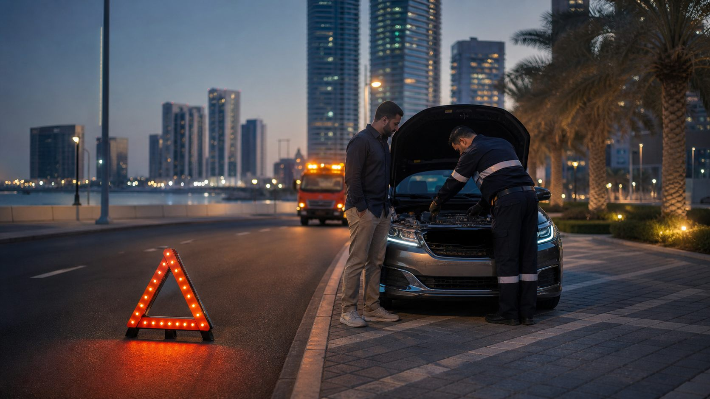

تشغيل السيارة
99 درهماً ثابتة، تشمل فحص البطارية والدينامو.
مساعدة على الطريق ليلاً ونهاراً
تبدأ المساعدة على الطريق في جزيرة الريم بالبطارية، ولهذا يأتي الفني مجهزاً لها: تشغيل السيارة، وفحص البطارية ونظام الشحن، وتركيب بطارية جديدة في المكان عند الحاجة. وتتوفر المساعدة في الإطارات والسحب عندما لا تكون المشكلة في البطارية.

السيارة التي لا تعمل على جانب الطريق أو أمام برج أو في موقف مول مثل ريم مول تكون مشكلتها غالباً في البطارية. يصل الفني ومعه جهاز تشغيل وجهاز فحص وبطاريات بديلة، فتُحل معظم الحالات في زيارة واحدة دون سحب السيارة.
نفحص البطارية ونظام الشحن قبل استبدال أي شيء. إذا كان التشغيل كافياً تنتهي الزيارة، وإذا كانت البطارية تالفة تحصل على سعر في المكان والقرار لك.
99 درهماً ثابتة، تشمل فحص البطارية والدينامو.
مستوى الشحن والتشغيل تحت التحميل وخرج الشحن والأقطاب، مشمول مع أي زيارة.
بطاريات شاملة التركيب من 249 درهماً، تُركّب على جانب الطريق أو في الموقف.
من 150 درهماً عندما لا يكون العطل في البطارية، بسطحة إلى ورشة تختارها.
إذا أظهر الفحص أن البطارية تحتاج إلى استبدال، يركّب الفني بطارية مناسبة حيث تقف السيارة: على جانب الطريق أو في موقف مول أو في مواقف الزوار بالمبنى. أرسل الماركة والموديل والسنة عند التواصل لتصل البطارية الصحيحة من أول زيارة، بما في ذلك AGM أو EFB لسيارات التوقف والتشغيل.
يشمل السعر المؤكد البطارية والزيارة المتنقلة والتركيب القياسي والفحص وإزالة البطارية القديمة لإعادة التدوير والضمان الذي يصل إلى 24 شهراً حسب الماركة. وإذا تطلبت السيارة تسجيل البطارية الجديدة نقوم بذلك قبل مغادرة الفني. الدفع نقداً أو بالبطاقة أو عبر تابي أو تمارا.
في حال ثقب الإطار، يمكن للفني تركيب الإطار الاحتياطي على جانب الطريق لتصل إلى محل الإطارات. أخبرنا إن كان في السيارة إطار احتياطي كامل أو مؤقت أو عدة إصلاح فقط، وهل مفتاح صامولة القفل موجود في السيارة.
إذا لم تعمل السيارة بعد التشغيل ولم يكن السبب في البطارية، أو لم يكن من الآمن قيادتها، نرتب سحبها بسطحة إلى ورشة تختارها. يبدأ السحب من 150 درهماً، ونؤكد السعر حسب المسافة قبل إرسال السطحة.
في جزيرة الريم أبراج متشابهة وطرق خدمة ومواقف متعددة الطوابق، وقد يقع دبوس الخريطة وحده في الجهة الخطأ من المبنى. بعض التفاصيل الإضافية توصل الفني إلى السيارة مباشرة.
إذا توقفت السيارة في مسار حركة السير، شغّل إشارات التحذير وانتقل إلى كتف الطريق أو شارع جانبي إن كان ذلك آمناً. ضع مثلث التحذير خلف السيارة وانتظر بعيداً عن حركة السير، وخلف حاجز إن وُجد.
أخبرنا عند التواصل إذا كانت السيارة في مكان غير آمن. نعطيك وقت الوصول الحالي، وإذا لم يكن المكان آمناً للعمل على الطريق نرتب السحب بدلاً من ذلك.
المساعدة على الطريق متاحة على مدار الساعة في جزيرة الريم، بما في ذلك شمس أبوظبي ومارينا سكوير وسيتي أوف لايتس ونجمة أبوظبي وميكرز ديستركت. ونخدم جزيرة المارية والزاهية ومنطقة النادي السياحي ووسط أبوظبي حسب وقت الوصول المتاح الذي نؤكده عند تواصلك.
FAQ
نعم، مساعدة البطارية على الطريق متاحة على مدار الساعة في جزيرة الريم.
يعتمد ذلك على موقعك ومكان الفني في ذلك الوقت، ونخبرك بوقت الوصول الحالي عند تواصلك.
نعم. بعد الفحص، إذا كانت البطارية تالفة نركّب بطارية مناسبة على جانب الطريق أو في الموقف، وتبدأ الأسعار شاملة التركيب من 249 درهماً.
99 درهماً ثابتة، تشمل فحص البطارية والدينامو. إذا كانت البطارية فارغة فقط، فهذه هي الزيارة كاملة.
يشرح لك الفني ما تظهره القراءات، وإذا لم يمكن قيادة السيارة يبدأ السحب من 150 درهماً بسطحة إلى ورشة تختارها.
نخدم جزيرة المارية والزاهية ومنطقة النادي السياحي ووسط أبوظبي حسب وقت الوصول المتاح.
نقداً أو بالبطاقة أو عبر تابي أو تمارا.
خدمة متنقلة في جزيرة الريم
شارك موقعاً مباشراً أو مثبتاً عبر واتساب مع أقرب معلم وماركة السيارة وموديلها، ونؤكد المساعدة المطلوبة ووقت الوصول الحالي.